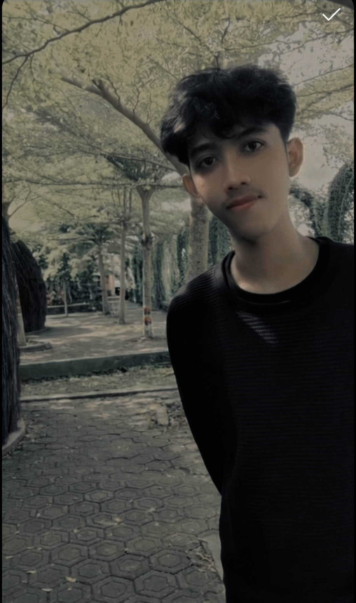

Personal Portfolio Web
Pengembangan website portofolio mandiri yang dibangun menggunakan Tailwind CSS untuk mendokumentasikan karir dan keahlian secara profesional.
Praktisi operasional logistik yang memiliki minat tinggi dalam pengembangan teknologi dan pemrograman web.

Saya adalah seorang lulusan SMK Teknik Komputer dan Jaringan yang memiliki minat besar terhadap dunia teknologi dan sistem operasional industri. Berdomisili di Cikarang Barat, saya telah membangun pengalaman kerja di berbagai sektor manufaktur dan logistik, mulai dari kontrol kualitas komponen hingga manajemen distribusi gudang.
Latar belakang pendidikan TKJ memberikan saya pondasi kuat dalam memahami infrastruktur digital. Di sela kesibukan profesional, saya aktif mendalami pengembangan web statis, manajemen perangkat keras PC, serta desain bordir digital menggunakan Inkstitch.
Kedisiplinan fisik yang saya asah melalui rutinitas boxing setiap pagi pada pukul 05:15 merupakan cara saya menjaga integritas, fokus, dan stamina untuk terus berkembang di dunia kerja maupun teknologi.
Pengembangan website portofolio mandiri yang dibangun menggunakan Tailwind CSS untuk mendokumentasikan karir dan keahlian secara profesional.
Implementasi desain pola bordir digital menggunakan perangkat lunak Inkstitch untuk kebutuhan manufaktur pakaian.
PT Lion Superindo
Bertanggung jawab dalam proses pengambilan barang (picking) dan pemuatan (loading) sesuai dengan Standar Operasional Prosedur (SOP) pergudangan retail.
PT Foreseight Global Foundation
Menangani dokumentasi administrasi produksi serta memastikan standar kualitas pengemasan unit terjaga sebelum proses distribusi dilakukan.